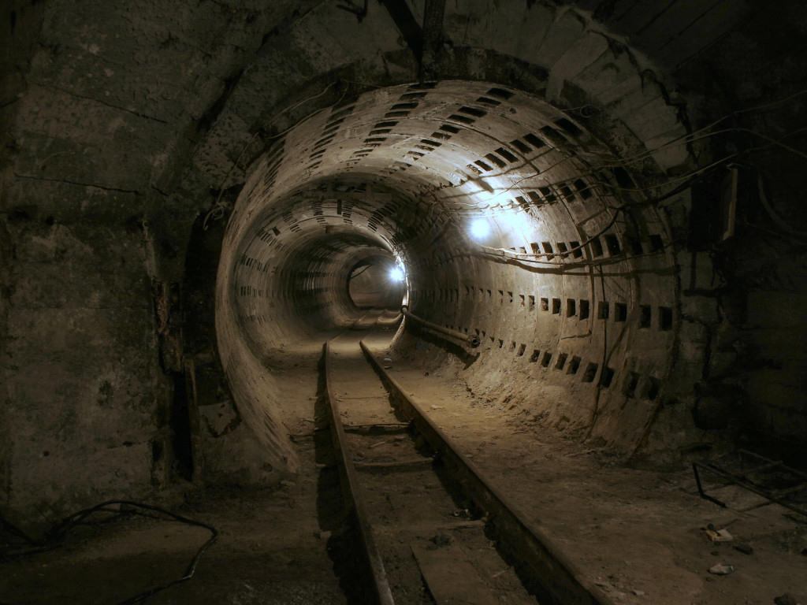

Curiosidades da Cidade
+

A Lenda dos Túneis de Blumenau
Caminhos subterrâneos que ligam diversos pontos por baixo da cidade – não é novidade. Mas a real existência deles, sim.
Em janeiro de 2015, um túnel foi encontrado durante a realização de obras na rede de esgoto, na rua Presidente John Kennedy, próximo ao Teatro Carlos Gomes e a Caixa Econômica Federal. Várias notícias recentes foram publicadas sobre o assunto e a criatividade dos blumenauenses não é tímida quando se trata de tentar adivinhar o propósito deste túneis e dos demais que, supostamente, ainda não foram encontrados.